Week 7: Subject Access
IS 505 Information Organization and Access
2024-02-27
Class Calendar
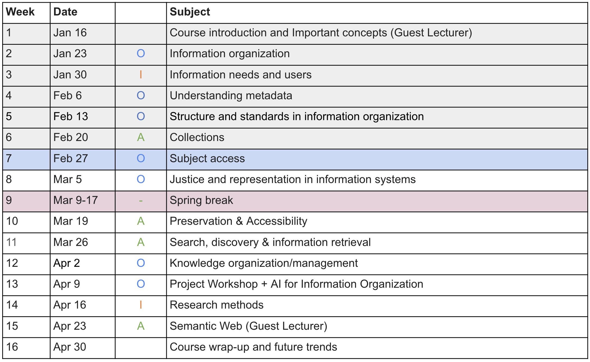Today’s Class
- Introduction
- Lecture & Discussion
- Break (10 minutes)
- Class activity
- Break (10 minutes)
- Guest Lecture by Christopher Bailey
Week 7 Readings
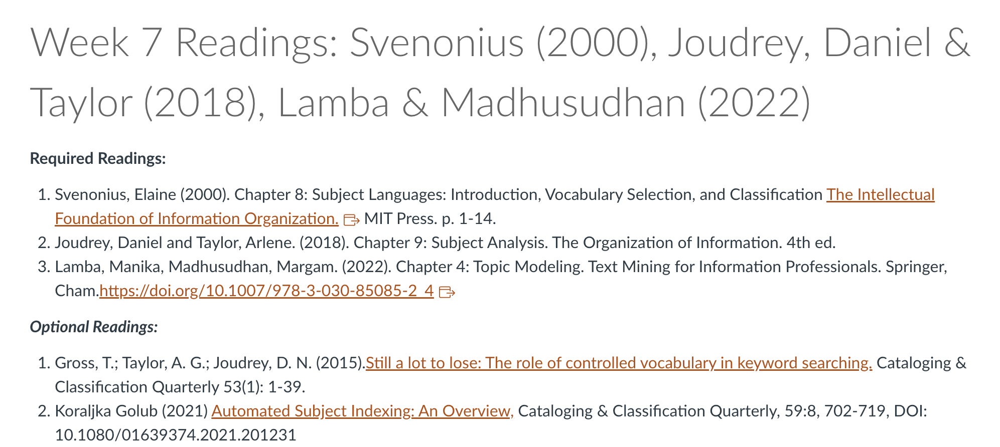Indexing
Subject indexing is the process of describing a document using keywords, symbols, or other index terms
Subject classification is the process of organizing materials into categories based on a scheme that identifies, distinguishes, and relates the materials' topics or concepts
One basic problem involved in the process of subject indexing is the choice of appropriate keywords or descriptors though which index entry is to be represented
The indexer prefers to use keywords that represents the subject clearly & likely to be chosen by user when looking for the subject
In order to standardize the task of choosing appropriate keywords for generation of index entries, no. of vocabulary control devices have been developed such as thesaurus
These tools help the indexer to choose most appropriate term to represent the subject at indexing stage and help the users to pick most appropriate terms while formulating a query
Indexing (Cont.)
2 different indexers may analyse content of a given document in 2 different ways resulting in 2 different index entries (Serious Drawback of Manual Indexing)
To avoid total dependence on human intellect, researchers have attempted to automate the whole process of subject indexing & classification
Most of the systems developed so far for automatic content analysis are based on statistical calculation of occurrence of keywords in the documents
Given the shortcomings of such statistically based systems, researchers have suggested the need of syntactic & semantic analysis of text statements by using computational linguistics in the process of content analysis
Exhausivity and Specificity
More in Week 11 (Mar 26): Search and Information Retrieval
Effectiveness of an indexing system is controlled — exhaustivity & term specificity
Exhaustivity is the degree to which subject matter of a given document has been reflected through index entries
To attain exhaustivity, system has to select as many keywords as possible to represent the idea put forward in the document
Specificity refers to how broad or how specific are the terms or keywords chosen under a given situation. More specific the terms, better is the representation of the subject through the index entry
Recall & Precision measure the effectiveness of a systems where
– Recall = No. of relevant documents retrieved / No. of relevant documents in the collection
– Precision = No. of relevant documents retrieved / Total no. of documents retrieved
More Exhaustivity, higher recall & lower precision
More Specificity, higher precision & lower recall
Controlled Vocabulary
Vocabulary is a set of terms (words, codes, etc.) that are used in a specific community
When a vocabulary is formally managed, it becomes Controlled Vocabulary
Where managed means the terms are stored & maintained using agreed-upon procedures
Procedures should exist for adding terms, modifying terms, & more rarely, deprecating terms from a controlled vocabulary
CV is a carefully selected list of words and phrase, which are used to tag units of information so that they may be more easily retrieved by a search
The terms are chosen by and organized by trained professionals (including Librarians and information scientist) who posses expertise in the subject area
CV terms can accurately describe what a given document is actually about, even if the terms themselves do not occurs within the text
Fully developed CV systems are LCSH, Sears List, Thesaurus etc.
Difference Between Index & Controlled Vocabulary
| Indexes | CVs | |
|---|---|---|
| End product | index | term list |
| Use | content locator | content tagging, website navigation, search enhancement |
| Project time | weeks | months |
| Methodology | reading | research |
Subject Headings
Also called as subject terms/index terms/index keywords
- A subject heading is a short topic description, taken from a defined list of terms, which is organized into categories
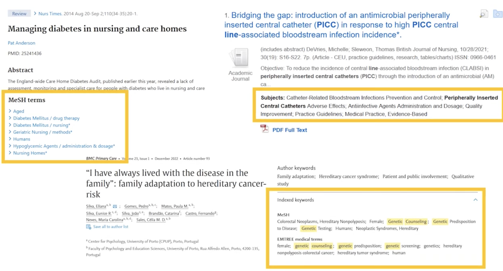
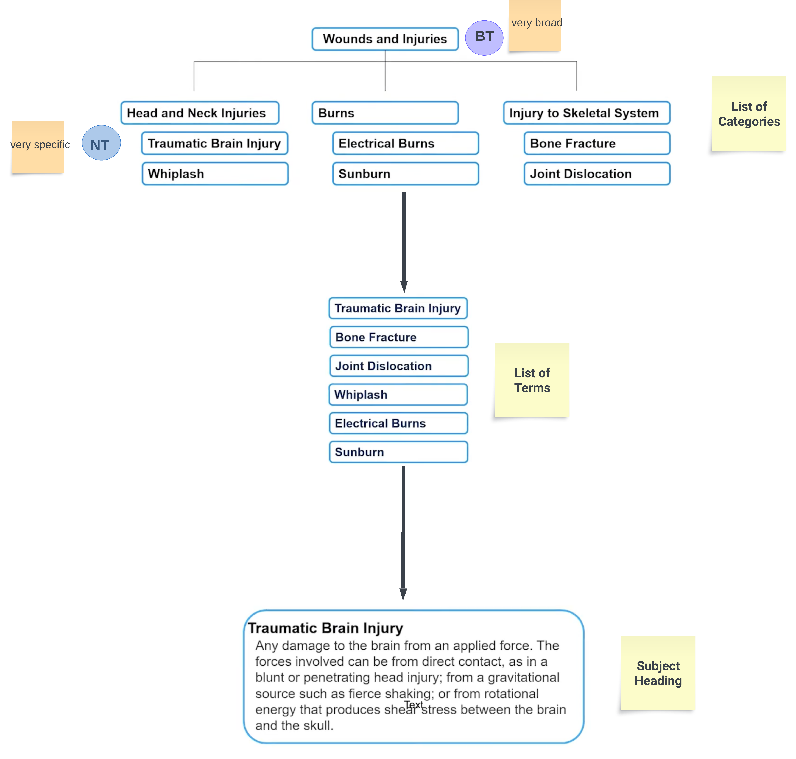
Subject Headings (Cont.)
- In compared to keywords, subject headings:
- they give single consistent description of a topic
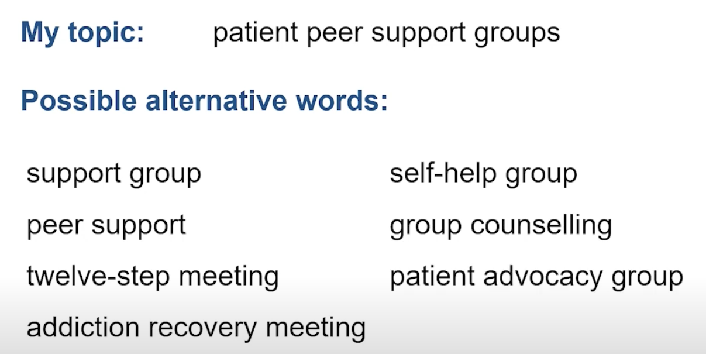
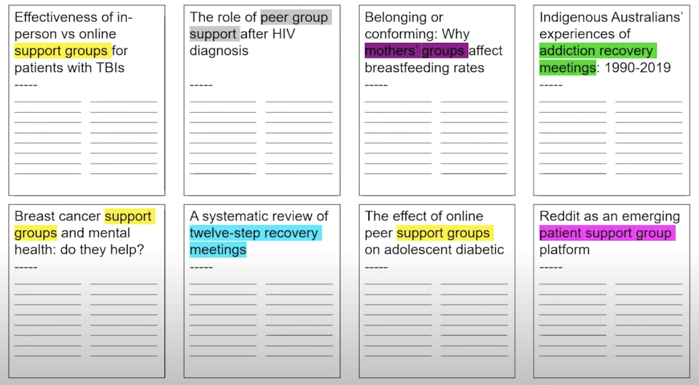 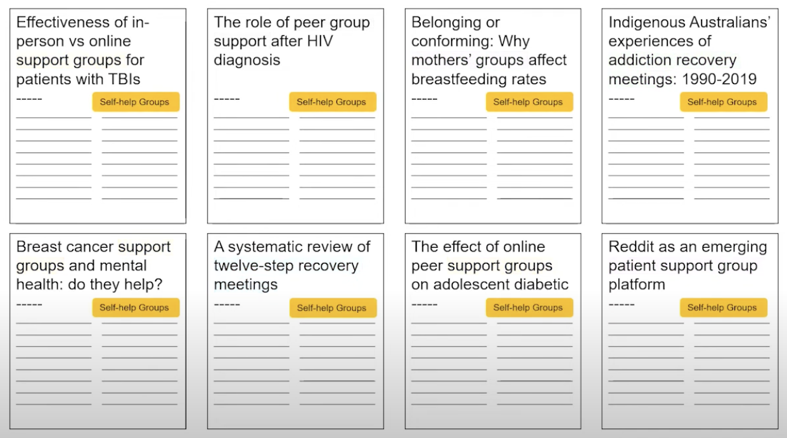
Subject Headings (Cont.)
- In compared to keywords, subject headings:
- they are organized into categories/hierarchy structure
When to Use Subject Headings?
- You have a lot of synonyms
- A topic is hard to describe in a short phrase
- You want to search across a whole category of topics
- To make any systematic search more rigorous
Topic Modeling
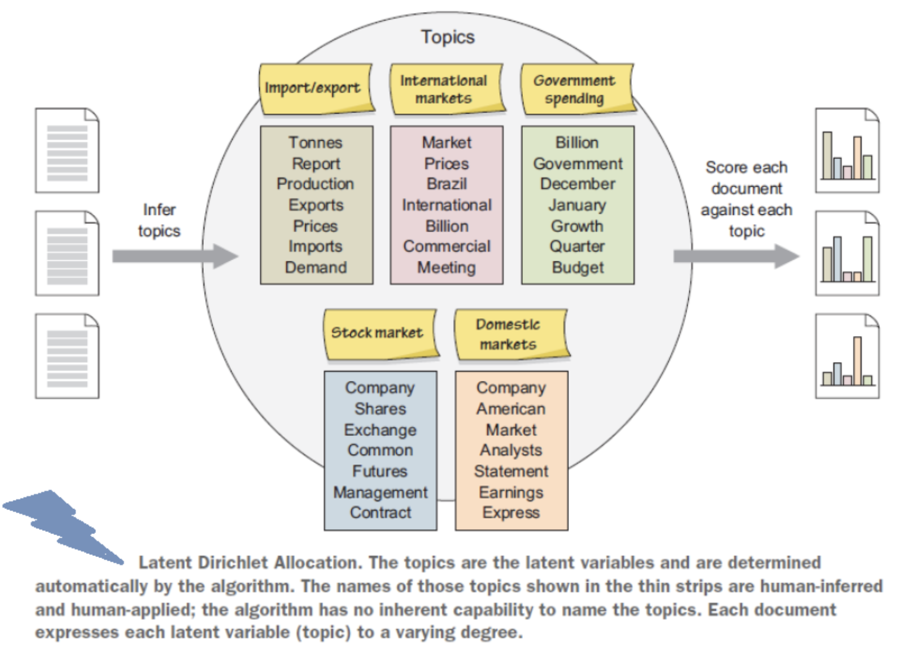
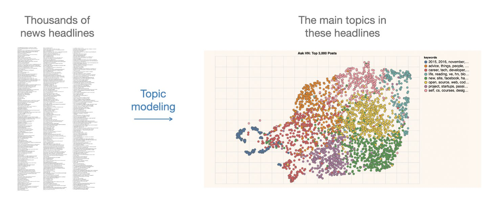
It assists in identifying topics within a context and how they advance in time
For instance, over time, few documents within a topic may initiate content that varies from the original content; if that initiated content is shared by a lot of later documents, the content is recognized as a new topic
Hence, with the progression of time, topics advance, new themes emerge, and old ones become obsolete
So, topic modeling not just helps the librarians to decide the trending topics or related fields to their field of intrigue but additionally encourages them to distinguish new concepts and fields over time
When you have a vast collection of text documents
When the collection belongs to a specific subject
When the collection has a similar type of documents, such as when all files in the collection are newspaper articles
When you have a relatively small number of documents
When you do not have any idea about your collection. In this case, clustering will be a better option than using topic modeling
When the collection has a mixture of different types of documents, such as when the collection is composed of newspaper archives, journal articles, and ETDs
Topic Modeling
Out-of-Box Tools
Python Libraries
- Open questions:
- How we use the output of the algorithm?
- How should we visualize and navigate the topical structure?
- What do the topics and document representations tell us about the texts?
- Output of topic modeling is not entirely human-readable, and one way to understand the results is through visualization
- “Topic models are meant to help interpret and understand texts, but it is still the researcher’s job to do the actual interpreting and understanding” (Blei, 2012)
- “Be sure that you can understand the visualization as topic modeling tools are fallible” (Blei, 2012)
PQDT: Case Study
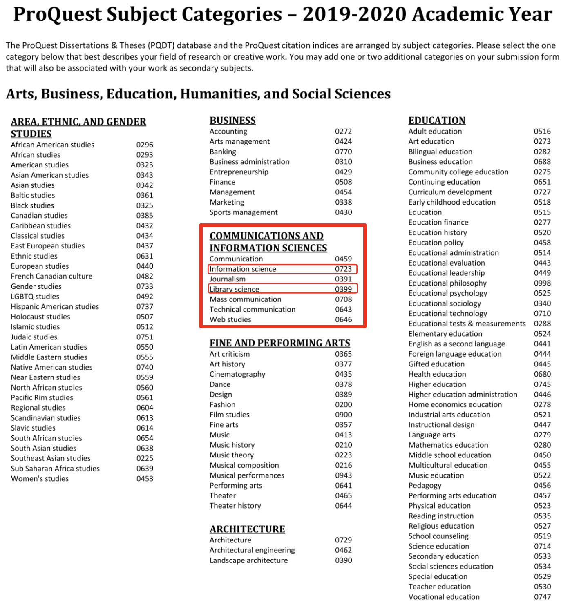
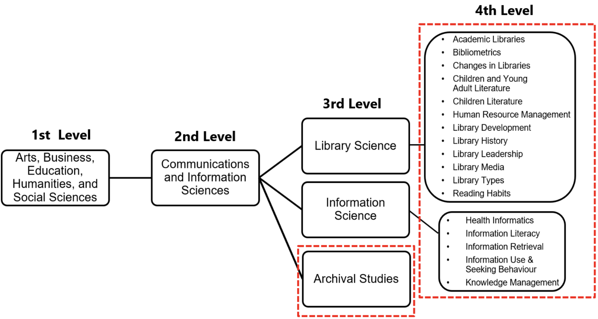
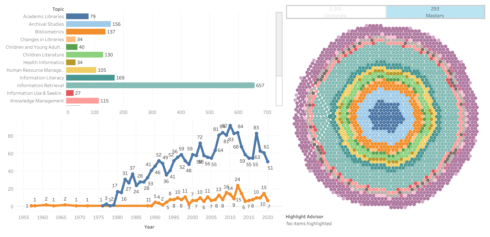
Discussion
Amanda & Haley
What are some ways that we as information professionals can strive to eliminate our own biases from our classification systems? How can we normalize subject analysis in order to create a universal, truthful, classification system?
Kari
What did collaboration in metadata creation look like before the digital age? What does it look like today? What might it look like in the future?
Oilvia
Whether automation of subject retrieval is helpful or harmful to the design of subject language?
- Take a few minutes to discuss with a neighbor the question of your choice
In-Class Activity
Subject Classification vs Topic Modeling
Group Activity Instructions:
Download the file assigned to your group from Canvas
You’ll find four highlighted columns showcasing the
'subject'and'identifier/keywords'assigned by the ProQuest database indexer via their in-house classification system, while'topic'and'category'are generated through topic modeling.As a senior librarian, your task is to thoroughly examine these four columns by reviewing the ‘Title’ and ‘Abstract’ of the theses.
Your goal is to assess whether ProQuest’s in-house classification system effectively captures the subject heading of the theses, or the automated classification system (topic modeling) outperforms in providing comprehensive coverage of the subject covered in the title and abstract.
In-Class Activity
For 20 entries in the spreadsheet, write your response in the column 'In-house PQDT Classification/Topic Modeling' as pqdt if you think Proquest’s in-house classification did a better job in covering the subject of the title +abstract otherwise write topic modeling.
- Upload your revised spreadsheet to Canvas.
In-Class Activity
Each group will post a single post to Canvas with their responses. At the top of the forum post, list all your group members’ names.
Discussion points for your assignment:
How many columns did you tag as pqdt versus those tagged using topic modeling?
In your role as a senior librarian, which method proved more effective in indexing the subjects of the theses: ProQuest’s indexer utilizing in-house classification, or the automated classification method (topic modeling)?
When you initiated this activity, which method did you anticipate would yield superior results? Has that expectation been met?
Will you consider using topic modeling for subject classification/indexing as a librarian/archivist/curator for your collection (such as from week-4: build you own online collection)? Why or why not?
Due Next Week
Weekly Discussion Post (Week 8): March 3, 2024 (Sunday) by 11:59 pm
Start to think of:
- Proposal topic for Final Assignment (Feb 20 to Mar 19)
- Professional engagement post (April 9)
- Technical learning post (April 23)
Next Week (Mar 5): Justice and Representation in Information Systems
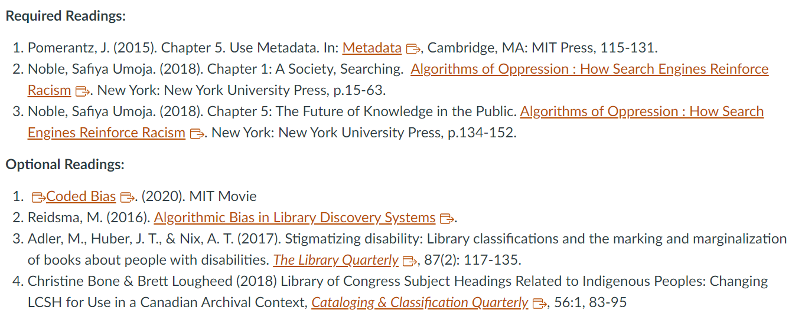Office Hours
Open Office Hours: Mondays 1-2 PM; Wednesdays 2-3 PM
Dr. Manika Lamba
Email: manika@illinois.edu
Dr. Liliana Giusti Serra
Email: lilianag@illinois.edu